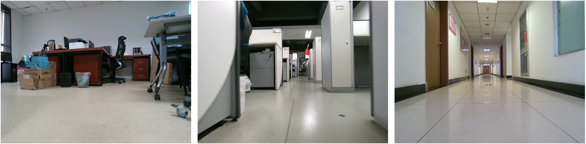
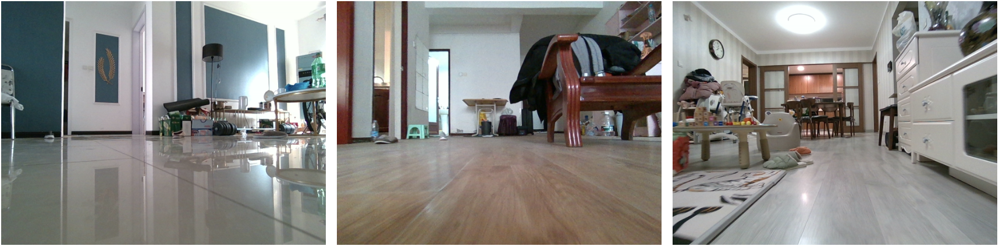

About this dataset
To advance research in leveraging semantic information and multi-sensor data to enhance the performances of SLAM and 3D reconstruction in complex indoor scenes, we propose a novel and complex indoor dataset named CID-SIMS, where semantic annotated RGBD images, inertial measurement unit (IMU) measurements and wheel odometer data are provided from a ground wheeled robot viewpoint. The dataset consists of 22 challenging sequences captured in 9 different scenes including office building and apartment environments. Notably, our dataset achieves two significant breakthroughs. Firstly, semantic information and multi-sensor data are provided meanwhile for the first time. Secondly, GeoSLAM is utilized for the first time to generate ground truth trajectories and 3D point clouds within 2 cm accuracy. With spatial-temporal synchronous ground truth trajectories and 3D point clouds, our dataset is capable of evaluating SLAM and 3D reconstruction algorithms in a unified global coordinate system.
Sequences
Sequences in this dataset are mainly from a ground wheeled robot with two camera views (approximately 0.26 m (high) and 0.12 m (low) above the ground), except for two sequences that contain handheld situations when going downstairs. The dataset covers a large variety of scenes and motion modes. There are some challenging scenarios such as motion blurs, illumination changes, reflective objects and weak textures.
Statistics

Office Building
We collect 13 sequences in a typical office building, which cover 6 different scenes. Sequences in floor scenes are challenging because of insufficient rotation and weak textures.
Apartment
We record 9 sequences in real living environments, which cover 3 different apartments. The apartments are about 10 m × 10 m, including a living room, two or three bedrooms, a bathroom and a kitchen. These rooms are cluttered with small and unstructured obstacles. Sequences in apartment scenes contain rich loops and rotational motions. There are also challenging situations such as motion blurs, weak textures and reflective objects.